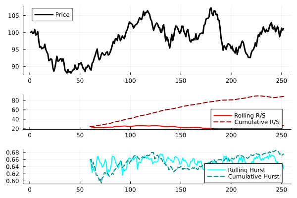

Chaos Theory / Fractals
Example
using Temporal, Indicators, Plots, Random
Random.seed!(1)
x = TS(100 .+ cumsum(randn(252)))
x.fields[1] = :Price
r = [rsrange(x, n=60) rsrange(x, n=60, cumulative=true)]
r.fields = Symbol.(["Rolling R/S", "Cumulative R/S"])
h = [hurst(x, n=60) hurst(x, n=60, cumulative=true)]
h.fields = Symbol.(["Rolling Hurst", "Cumulative Hurst"])
f1 = plot(x, linewidth=3, color=:black)
f2 = plot(r, linewidth=2, color=[:red :darkred], linestyle=[:solid :dash])
f3 = plot(h, linewidth=2, color=[:cyan :darkcyan], linestyle=[:solid :dash])
plot(f1, f2, f3, layout=@layout[a{0.5h}; b{0.25h}; c{0.25h}])"/home/runner/work/Indicators.jl/Indicators.jl/docs/build/chaos_example.svg"
Reference
Indicators.hurst — Method
hurst(x::Array{T}; n::Int=100, cumulative::Bool=false, intercept::Bool=false)Compute the Hurst exponent of a time series
Indicators.rsrange — Method
rsrange(x::Array{T}; n::Int=100, cumulative::Bool=false, intercept::Bool=true)Compute the rescaled range of a time series